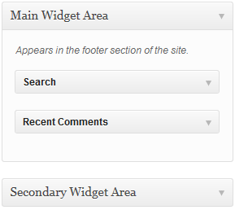

WCSD Theme Develoment Bootcamp
(or, if you build it they will come.)
Your Speakers


Before we begin...
http://azanebrain.github.io/wcsd-2015-theme/ http://azanebrain.github.io/wcsd-2015-theme/questions http://azanebrain.github.io/wcsd-2015-theme/slides
I. The Tools
Your best friends in the WordPress game
File Management
cPanel (most common on servers)
Transmit (Mac)
FileZilla (PC & Mac)
Database Management
phpMyAdmin (default on most hosts)
Sequel Pro (Mac)
Code Editor
Atom (Web-based. Very cool.)
Sublime Text 3 (Mac & PC)
Coda (makers of Transmit)
Command Line (CLI)
Terminal (built in to Mac)
iTerm (a BETTER Mac terminal)
Git Bash (PC)
Version Control
SVN (boo)
Git (yeah baby!)
CSS Preprocessors
Sass (and SCSS)
Less
HTML/Markup Preprocessors
Jade
Haml
Javascript Preprocessors
CoffeeScript
Compiler Applications
Codekit
Prepros
Koala
Resources
WordPress Codex (the Bible)
Stackoverflow (ALL THE SMART!!)
Google (duh, sucka)
Setting up WordPress
[Yes, ServerPress! Help available at Happiness Bar also]II. Getting to know WordPress
10¢ Tour
WordPress File Structure
[image of sublime tree]Core
[admin]Updates
[updates screenshot]Plugins
[plugins screenshot default, full of plugins]Media
[screenshot of library, detail]Content Types
[sidebyside of page vs. post vs. Events for example] talk about the conceptTaxonomies
[screenshot of defaults, events for examples]The Loop
if ( have_posts() ) {
while ( have_posts() ) {
the_post();
//
// Post Content here
//
} // end while
} // end if
The Loop 2.0
*WP_QueryDiving into Theming
index.htmlindex.html
style.css
index.php
header.php & footer.php
Template Hierarchy
*image hererevisiting index.php
*page & post singlefront-page.php
archive.php
*cat, tag, author, date etc.sidebar.php
functions.php
The rest
*404, etc.III: Integrating your HTML & WP Tags
Index.PHP Teardown
get_header() and get_footer()
Like include()
but different
How to use the Codex and the README
The README.md file in the demo project has links to relevant codex articles and code snippets
Task:
Replace index-sample.php with index.php
Header.PHP
wp_head()
Meta for your theme
Dev tools in your browser:
Right click -> Inspect Element
get_template_directory()
Outputs the path to the theme
Task:
Use get_template_directory() to fix the broken links to scripts and styles
Navigation
Defining & Using
Defined in functions.PHP
function wcsd_setup() {
register_nav_menus( array(
'primary' => __( 'Top primary menu', 'wcsd' ),
) );
}
add_action( 'after_setup_theme', 'wcsd_setup' );
Used in header.PHP
$args = array(
'theme_location' => 'primary',
'menu_class' => 'nav navbar-nav',
);
wp_nav_menu( $args );
Task:
Activate the menu by removing the hard-coded links in header.PHP, and uncommenting the WP function
Footer.PHP
Very similar to header.PHP
Task:
Add the Admin Bar through wp_footer()
Main Content
Task:
Rename page-sample.PHP to page.PHP
The Loop
The key concept of displaying posts and pages in WordPress
<?php
if ( have_posts() ) {
while ( have_posts() ) {
the_post();
// the_content();
// the_excerpt();
// the_title();
// the_permalink();
// ...
}
}
?>
the_post()
Sets up the current post object
It is the first declaration in The Loop
while ( have_posts() ) {
the_post();
...
Featured Images & Thumbnails
Define in functions.PHP
add_theme_support( 'post-thumbnails' );
Check if the post has an image
if ( has_post_thumbnail() ) { ... }
Use anywere
if ( the_post_thumbnail() ) { ... }
Task:
Add and display a medium sized featured image on Page A
Extra: If the post has a featured image, display two columns in the content area instead of one
Single Template
Just like the Page template but used for individual posts
single.PHP
Archive Template
Same loop, different function
archive.PHP
Sidebars
Not actually on the side
Sidebar usage
Register
register_sidebar( array( ... ) );
sidebar.PHP
if ( is_active_sidebar( 'sidebar-name' ) ) {
dynamic_sidebar( 'sidebar-name' );
}
Use anywhere
get_sidebar()
Task:
Uncomment the sidebar in footer.PHP
Display the WCSD sidebar instead of the generic one
Pagination
Task:
Add previous and next pagination links on the archive template
Front Page
WP Query
Enqueueing
IV. Functions.php & Registering and Enqueueing Scripts and Styles
Adding functionality
functions.php
functions.php is a special file that acts like a plugin to add functionality to your theme. If you're using a child theme you can use it modify and add functionality to the parent theme.
Check out the WordPress Codex Functions File Explained
Adding functionality
functions.php in a child theme
functions.php works like style.css in a child theme. It adds to and modifies the parent's functions.php. You don't make a copy of it in your child theme folder like you do with template files, you start a new one.
<?php
/**
* My theme functions and definitions
*/
(all your functions go here)
?>
Adding functionality
functions.php
You can tell your theme to load external files in functions.php. It helps you keep functions.php from being overloaded with too much code.
// Load a file from the inc folder
require_once 'inc/my-file.php';
Adding functionality
Keeping things organized
It's important to keep theme files organized.
- awesome (theme folder)
- css (any theme css you want to keep out of style.css)
- images (all the images used in your theme)
- inc (includes, I put functionality-related stuff in here)
- css (css used for functionality in the
incfolder) - images (images used for functionality in the
incfolder) - js (js used for functionality in the
incfolder)
- css (css used for functionality in the
- js (theme javascript)
Adding functionality
Hooks, Action and Filters
codex.wordpress.org says:
Hooks are provided by WordPress to allow your plugin to 'hook into' the rest of WordPress...There are 2 kinds of hooks:- Actions: A custom PHP function defined in your plugin (or theme) and hooked, i.e. set to respond, to specific events that take place in WordPress.
- Filters: Functions that WordPress passes data through, at certain points in execution, just before taking some action with the data
Adding functionality
Hooks, Action and Filters
Hooks, Actions and Filters allow you to change core WordPress functionality without breaking it.
Adding functionality
Hooks, Action and Filters
Hooks - Points at which WordPress allows you to tap into a function and safely modify it.
Some examples are:
- Changing the length of the excerpt
- Adding Widgetized areas
- Adding Menu areas
- And hundreds of other things
Adding functionality
Hooks, Action and Filters
Actions - A hook that makes something new happen when a WordPress function is triggered.
Adding functionality
Hooks, Action and Filters
Filters - A hook that modifies a WordPress function when it is triggered.
Adding functionality
Hooks, Action and Filters
Visual Demo of Hooks, Actions and Filters
From Tracy Levesque's talk at WordCamp San Francisco.
19 minutes in.
Adding functionality
Handy WordPress Functions
The following is an overview of some handy WordPress functions you can hook into to enrich your themes.
Check out the WordPress Codex Entire Function Reference
Adding functionality
add_image_size
You can add custom images sizes (in addition to the default thumb, medium, large and original).
add_image_size( 'my-img', 400, 400 ); // soft proportional crop mode
add_image_size( 'other-img', 200, 269, true ); // hard crop mode
Check out the WordPress Codex add image size
Adding functionality
get_the_post_thumbnail
In your template you can use a tag to load your custom version of featured images.
<?php echo get_the_post_thumbnail($page->ID, 'my-img'); ?>
Adding functionality
get_the_post_thumbnail
Tip! Adding custom thumbnail sizes to functions.php will not affect images previously uploaded, only images uploaded from that point on. You will need to regenerate older images.
You can use the handy Regenerate Thumbnails plugin to create the custom sizes of your previously uploaded images.
Adding functionality
wp_enqueue_style / wp_enqueue_script
You may want to add css and js files to your theme, for instance jQuery, or a framework like Bootstrap. A common beginner mistake is to hard code these into header.php. The correct way to add files to <head> is to enqueue it in your functions.php file.
Check out the WordPress Codex wp enqueue style and
wp enqueue script
Adding functionality
wp_enqueue_style / wp_enqueue_script
Load WordPress' core copy of jQuery. If you're using jQuery with your theme you should always use WP's copy vs. an external version.
function my_scripts() {
wp_enqueue_script( 'jquery');
}
add_action( 'wp_enqueue_scripts', 'my_scripts' );
Adding functionality
wp_enqueue_style / wp_enqueue_script
Load a script that depends on jQuery. Bootstrap is a framework that needs jQuery to run. The code below will load both jQuery and Bootstrap JS.
function add_bootstrap() {
wp_enqueue_script(
'add-bootstrap-script',
get_stylesheet_directory_uri() . '/inc/bootstrap/js/bootstrap.min.js',
array( 'jquery' )
);
}
add_action( 'wp_enqueue_scripts', 'add_bootstrap' );
Adding functionality
wp_enqueue_style / wp_enqueue_script
Load a stylesheet and a script.
function add_bootstrap() {
wp_enqueue_script(
'add-bootstrap-script',
get_stylesheet_directory_uri() . '/inc/bootstrap/js/bootstrap.min.js',
array( 'jquery' )
);
wp_enqueue_style(
'add-bootstrap-style',
get_template_directory_uri() . '/inc/bootstrap/css/bootstrap.min.css',
array(), 'all' );
}
add_action( 'wp_enqueue_scripts', 'add_bootstrap' );
Adding functionality
register_nav_menus
 If you have used custom menus in WordPress sites before (Appearance > Menus in the admin) you know a theme can have specific menu locations.
If you have used custom menus in WordPress sites before (Appearance > Menus in the admin) you know a theme can have specific menu locations.
Check out the WordPress Codex register nav menus
Adding functionality
register_nav_menus
Use register_nav_menus to register your menus.
register_nav_menus( array(
'footer-nav' => 'Footer Menu',
) );
Adding functionality
wp_nav_menu
Use the wp_nav_menu tag to assign a menu to a location in your theme.
<?php wp_nav_menu( array( 'theme_location' => 'footer-nav' ) ); ?>
Check out the WordPress Codex wp nav menu
Adding functionality
wp_nav_menu
You can also use wp_nav_menu to load any custom menu you've created in Appearance > Menus. You can use the menu's ID, slug, or name.
<?php wp_nav_menu( array('menu' => '2' )); ?>
Adding functionality
register_sidebar

Most themes come with specific widgetized areas -- locations in the sidebar, footer, header, etc. that you can drag and drop widgets into. You can use register_sidebar to create widgetized areas in your theme.
Check out the WordPress Codex register sidebar
Adding functionality
register_sidebar
Use register_sidebar to register your widgetized areas.
register_sidebar(array(
'name' => __( 'Header Widget Area' ),
'id' => 'headerwidget',
'description' => __( 'The header widget area.' ),
'before_widget' => '<div id="%1$s" class="headerwidget %2$s">',
'after_widget' => '</div>',
'before_title' => '<h4 class="headerwidgettitle">',
'after_title' => '</h4>',
));
Adding functionality
dynamic_sidebar
Use the dynamic_sidebar tag to assign a widgetized area to a location in your theme.
<?php dynamic_sidebar( 'headerwidget' ); ?>
Check out the WordPress Codex dynamic sidebar
Adding functionality
dynamic_sidebar with conditional tags
Use the dynamic_sidebar tag along with conditional tags to load certain widget areas on certain pages.
if(is_page( 'about' )){
dynamic_sidebar( 'aboutsidebar' );
}
if(is_page( 'contact' )){
dynamic_sidebar( 'contactsidebar' );
}
Exercise time!
Add some functionality to your theme!
Try to use any of the functions we learned today.
- add_image_size
- get_the_post_thumbnail
- wp_enqueue_style
- wp_enqueue_script
- register_nav_menus
- wp_nav_menu
- register_sidebar
- dynamic_sidebar
Try to do it yourself (if you're stuck download functions.php off Github).